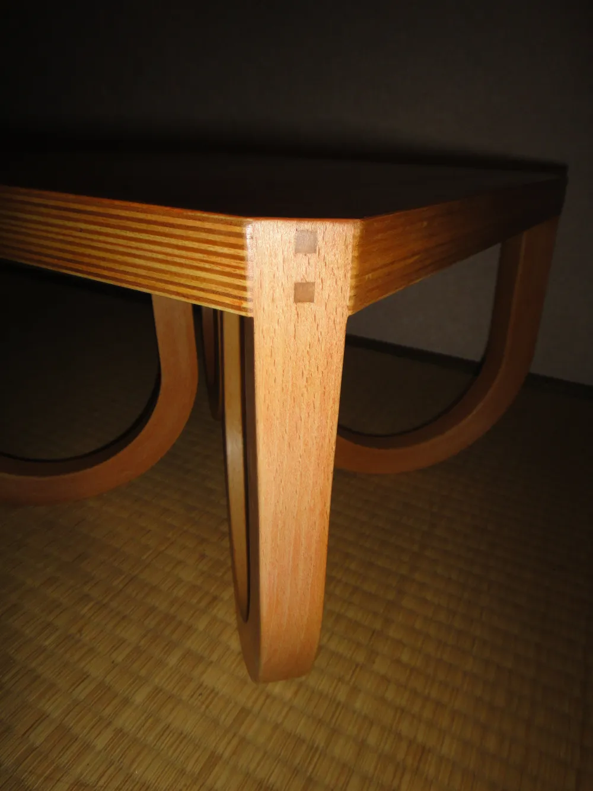
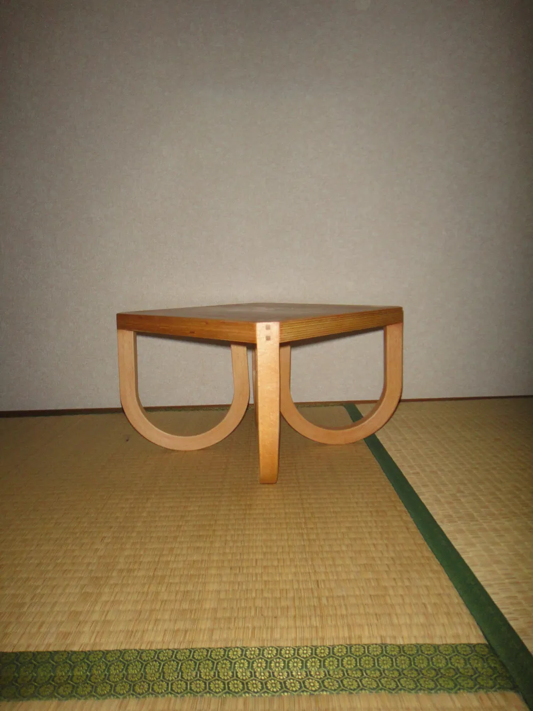

Zabuton Table (Stool)
/座布団テーブル（腰掛け）
Side table or stool that was inspired by the soft, pillowy texture
of a zabuton, a traditional Japanese cushion and its four corner cords.
Size: H270xW400xD400mm
Materials: Birch Plywood, 1 mm Beech Veneer
座布団のふわふわ感、もっちり感と四つ角の紐からデザインしたサイドテーブル、腰掛け
サイズ：H270xW400xD400mm
素材：シナ合板、ブナ突板1mm

